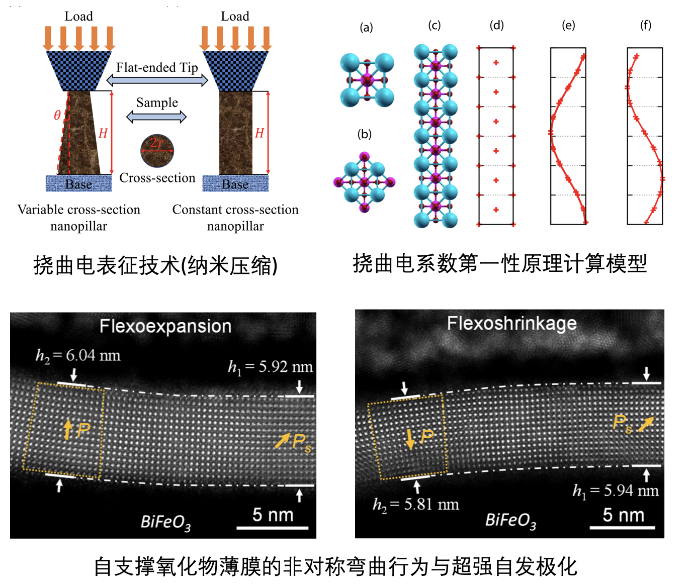
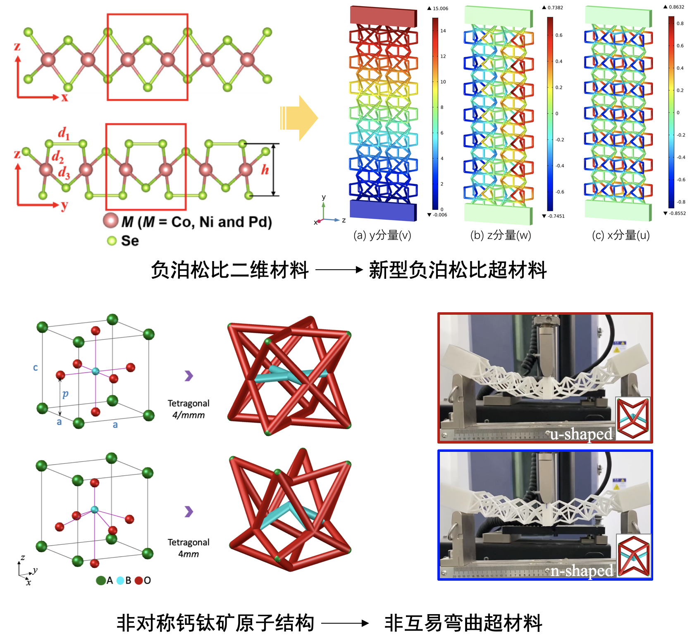
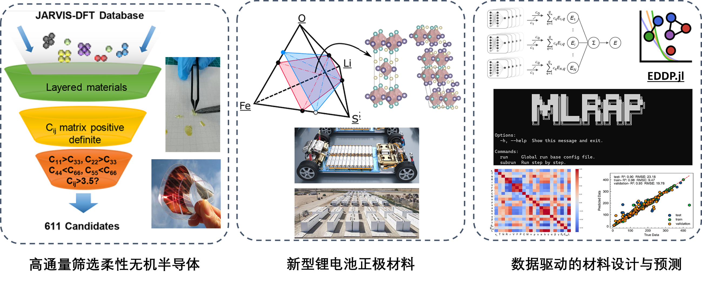

研究方向
从微纳尺度的多场耦合到宏观材料与结构设计。
先进功能材料中力电耦合效应及新奇物理力学行为
先进功能材料具有优异的力、电、磁、热、光等多物理场耦合性能，在航空航天、先进制造、清洁能源、人工智能、生物医学等前沿领域获得广泛应用。先进功能材料中的多场耦合力学研究涉及到力学、物理和材料等多学科的前沿交叉，是固体力学前沿和热点研究领域。而挠曲电效应是描述材料中应变梯度与电极化相互作用的一种新型力电耦合效应。微纳尺度下应变梯度急剧增强使挠曲电效应对功能材料的力、电、热、磁、光等多场耦合性质产生重要的影响。该研究方向致力于低维材料本征挠曲电效应的第一性原理计算方法与实验表征技术的开发；从低维晶体的制备、挠曲电效应的表征到探究微纳尺度挠曲电效应诱发的反常物理行为，如挠曲电基础理论与计算方法，铁电材料的弯涨行为与非对称力学特性，自支撑薄膜中的超大自发电极化，表/界面电子输运行为调控、挠曲电诱导的新奇铁电畴结构以及挠曲-光伏/磁/热释电等新奇物理效应，为设计新型挠曲电微机电元件和器件提供理论与实验支持。

微纳材料新奇物理特性启发的宏观超材料设计
微纳尺度极限下的材料具有新奇的物理和力学特性，比如超润滑性、超柔韧性、负热膨胀性、负压缩性、负泊松比效应、非互易弯曲特性等，这些特性的物理机制为宏观超材料的设计提供了丰富的方向和思路。通过模仿自然界生物组织的结构形态特征而实现具有相似功能的结构仿生设计方法已成为开发超材料的重要创新源泉，该科研方向将模仿对象从生物组织结构延伸到组成物体的晶格，分子甚至原子等微观基础单元，模仿微纳尺度的物理机制设计新的超材料。例如：受多晶金属晶界强化机制启发的多晶型高强度建筑材料；受烧绿石晶体的拓扑原子结构启发的具有反常非互易弹性响应的拓扑机械超材料。该研究方向致力于搭建一条沟通微纳材料物理特性与宏观结构物理特性的桥梁，将微纳材料的物理机制应用到宏观超材料的设计中，设计出具有新奇力学、物理性能的超材料。这不仅为力学超材料提供了创新性的设计方法，同时也为拓展微纳材料新奇特性在宏观尺度下的应用提供了有效途径，有望在重大工业设备和装备中获得应用。

扫描探针技术与功能性微结构的构筑、表征与调控
该研究方向基于课题组拥有的高精度原子力显微镜测试平台，在微纳尺度下通过多物理场耦合的压电力显微镜（PFM）、静电力显微镜（EFM）、开尔文探针显微镜（KPFM）、导电原子力显微镜（c-AFM）、磁力显微镜（MFM）、微波阻抗显微镜（sMIM）等多种模式，研究铁电、铁磁、铁弹、多铁单晶与陶瓷等材料。主要研究集中在微纳尺度观测与调控铁电/铁磁/铁弹的力学性质及其微观畴结构，以期实现力、电、热、磁、光等多物理场激励下的新奇现象和多功能化，为将来微纳电子元器件的跨越式发展提供科学发现和应用载体。

先进材料晶格动力学与新奇热性质
具有特殊热输运性质的先进材料在能源、环境、航天航空、集成电路等领域具有重要的应用，良好的热管理对提高元器件的稳定性、服役寿命以及对能量利用率都起着关键作用。该研究方向面向具有重要应用前景的极低或极高热导率材料，利用大科学装置中子源或同步辐射光源的先进非弹性散射技术，结合第一性原理模拟计算，以热电材料、铁性材料、新型相变储能材料等为研究对象，通过研究材料内部原子间线性和非线性相互作用及其原子的集体振动（声子），设计和调控材料的热输运性质及其可能存在的力、热、电耦合效应，为开发具有新奇热输运行为的先进材料提供科学依据。

高性能计算与软件开发
该研究方向基于第一性原理对先进材料的力、电、光、热、磁等性质进行原子尺度模拟研究，计算搭配课题组服务器、天河二号等超级计算机资源，结合机器学习和大数据挖掘技术，加速新材料的研发与应用。同时，也积极开发相关的高性能计算方法、程序代码和软件。如开发了在外电场下材料性能计算的程序代码，发展了高效、高精度的力磁耦合第一性原理计算方法。近期，开发了具有自主知识产权的用于模拟非弹性中子/ X射线散射四维动力学结构因子软件，基于此发展的虚拟实验技术，可有效提高材料声子性能的测试效率，大大简化相关数据处理。

机器学习赋能的材料理论设计与新材料发现
随着高性能计算、人工智能技术的发展，材料设计与研发已经进入了“第四范式”。该研究方向聚焦先进功能材料的理论设计与发现，通过结合基于量子力学的第一性原理计算和数据驱动的机器学习、人工智能方法，利用课题组自有高性能CPU/GPU计算集群以及超算资源，探索具有新奇特性的新型材料，满足国家重大需求。通对材料性质、机理、晶体结构的研究，建立结构-性能关系，为实验提供理论指导。研究方向包括能源、光电材料的理论设计，以及晶体结构预测、机器学习势函数等方法的发展与软件开发。
